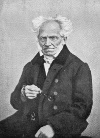

1865 yılında yirmi bir yaşındaki Alman bir üniversite öğrencisi tozlar içinde elli yıl önce yayınlanmış bir kitap bulduğunda Leipzig’deki bir kitapçıda araştırma yapıyordu. The World as Will and Representation (İrade ve Temsil Olarak Dünya) isimli kitap dünyayı kaotik ve çalkantılı bir çerçevede tarif ediyordu. Bu bakış açısı genç adam üzerinde önemli bir etkiye yol açacaktı.

Kitapçıdaki gencin adı Friedrich Nietzsche’ydi (1844–1900). Kitabın yazarı ise Arthur Schopenhauer (1788–1860). Bu kendine özgü filozofun kasvetli ve karamsar felsefesinin Nietzsche ve diğer Alman filozofları üzerinde olduğu kadar Avrupa çapında da büyük bir etkisi olacaktı.
Schopenhauer kendisinden fazla bir şey beklenmeyen bir filozoftu ve yaşadığı süre içerisinde büyük başarılar elde edemedi. Zengin bir şehir olan Danzig’te doğmuştu. Babası Heinrich gibi o da tüccar olmak üzere yetiştirilmişti. Arthur’un ilk adı bile ona iş dünyasında yardımcı olabilir diye seçilmişti. Ne var ki babasının bazı söylentilere göre intihar olan vakitsiz ölümü karar değiştirmesine neden oldu. On dokuz yaşında işletme eğitimini yarıda kesti. Üniversite eğitimi almaya karar vermişti.
1813 yılında Jena Üniversitesi’nden doktora aldı. Nietzche’nin kırk yedi yıl sonra bulacağı The World as Will and Representation isimli kitabı 1818 yılında yayınlandı. Schopenhauer Almanya’nın Berlin’deki en prestijli üniversitesinde profesör oldu. Ne var ki çok sevilmeyen bir kişiydi ve bu göreve sadece birkaç yıl devam ettikten sonra istifa etti.
1831 yılındaki kolera salgınından kaçabilmek için Berlin’den ayrıldı ve bir daha da geri dönmedi. Kısa süre sonra Franfurt’a yerleşti. Hayatının kalan kısmını burada iki Fransız finosu olan Atma ve Butz ile birlikte geçirecekti. On the Will in Nature (Tabiattaki İrade Üzerine) isimli kitabı 1836 yılında yayınlandı. Bu çalışması ile felsefesinin kapsamını genişletiyordu. Hinduizm ve Konfüçyus (MÖ 551-479) gibi Asya filozoflarından etkilenmişti.
Hayatının büyük bölümü bilinmezlikler içinde geçmişken son yıllarına doğru yazıları akademik ilgiye mazhar oldu. “Karamsar Filozof” yetmiş iki yaşındaki ölümünün ardından 19. yy Alman felsefesinin en önemli şahsiyetlerinden biri haline geldi.
Ek Bilgiler
1- Schopenhauer’in doğum yeri olan Danzig geçtiğimiz 300 yıl boyunca sürekli el değiştirmiştir. Almanya, Prusya ve Polonya muhtelif zamanlarda şehrin kontrolünü ele geçirmiştir. II. Dünya Savaşı’ndan beri ise Polonya sınırları içersinde kalmıştır. Günümüzde şehrin adı “Gdansk”tır.
2- Berlin Üniversitesi’ndeki kısa akademik kariyeri boyunca Georg Wilhelm Friedrich Hegel (1770–1831) ile rekabete girmiştir. 1820 yılında Hegel’in de ders verdiği bir saate o da kendi dersini koymuş ve öğrencileri ikisi arasında seçim yapmaya zorlamıştır. Çoğunluk Hegel’i seçmiş ve Schopenhauer kısa süre sonra ders vermeyi bırakmıştır.
3- Schopenhauer hiç evlenmedi. Ancak bebekken ölen evlilik dışı bir çocuğu vardı.